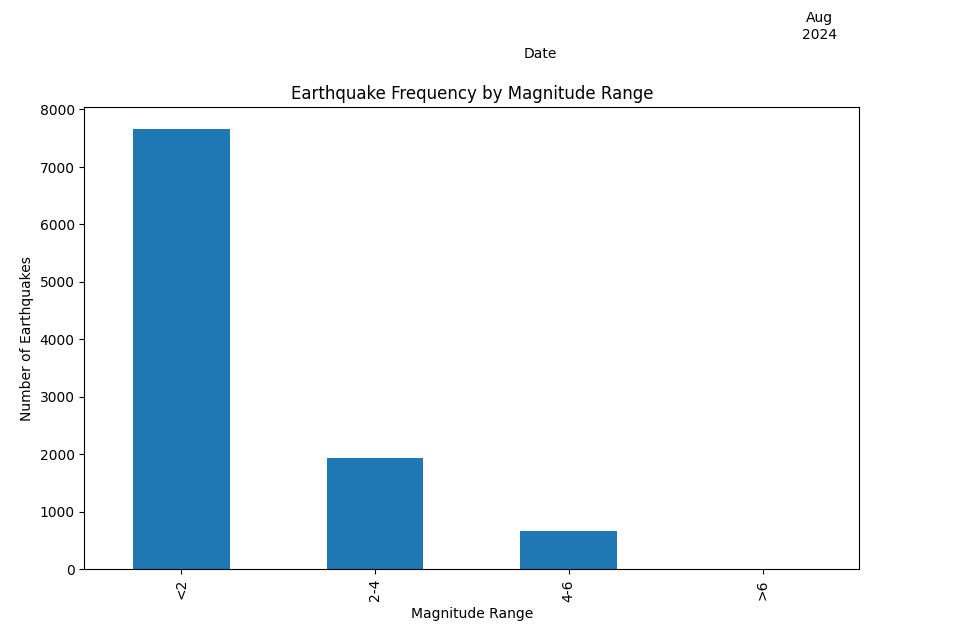
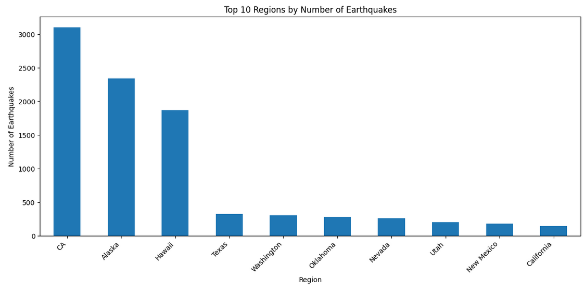
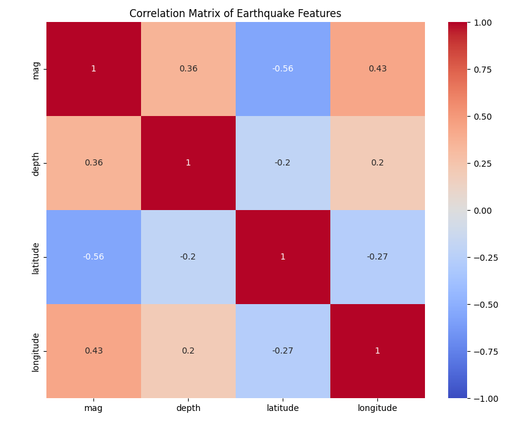

This project focuses on analyzing global earthquake patterns over the past month, examining frequency, magnitude, and geographical distribution.
By applying various data visualization tools, I discovered that Canada is a region with the most earthquakes, but the magnitude of these earthquakes is typically less than 2.
The diagram below shows the distribution of earthquake frequency across different magnitude ranges:
The following graph illustrates the top 10 regions based on the number of earthquakes:
Earthquakes have four main features: Magnitude, Longitude, Latitude, and Depth. The image below shows the correlation between these features. Notably, Longitude, Magnitude, and Depth exhibit stronger correlations.
